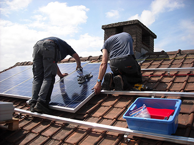

Plaatsing en service
Na de bestelling maken wij zo snel mogelijk een legplan op, zodat u vooraf duidelijk kan zien waar precies de zonnepanelen op het dak zullen worden bevestigd. Uiteraard doen we dan in samenspraak met u.
Vervolgens plannen wij de plaatsing in. Enkel bij vriestemperaturen, sneeuwval of hevige regenval kan de plaatsing niet als voorzien worden uitgevoerd. Doorgaans ligt de plaatsingsdatum twee tot drie maanden na datum van bestelling.
Bij het plaatsen gaat onze technische ploeg uiterst voorzichtig te werk om schade aan uw dak in alle omstandigheden te voorkomen. Onze plaatsingsploegen bestaan steeds uit een elektricien en een dakwerker. Ze zijn steeds zeer ervaren in dit werk.
De steunbeugels waarop de panelen worden bevestigd, worden steeds rechtstreeks op de gording bevestigd, nooit op panlatten. De pannen worden lichtjes uitgeslepen op de plaats van de beugels, zodat er nooit bijkomende druk op de pannen kan ontstaan en de stabiliteit van de dakconstructie niet in het gedrang komt.
Het leggen van zonnepanelen op het dak van een private woning, duurt zelden langer dan een dag. Daarbij is de plaatsing van de omvormer en de aansluiting van de installatie op uw zekeringenkast en elektriciteitsmeter inbegrepen. Enkel bij complexe installaties kan het langer duren.
Vooraleer uw zonnepanelen effectief in gebruik kunnen genomen worden, moet de ganse installatie door een erkende instantie gekeurd worden. Daar hoeft u zich geen zorgen over te maken - wij regelen voor u een afspraak bij de keuringsinstantie.